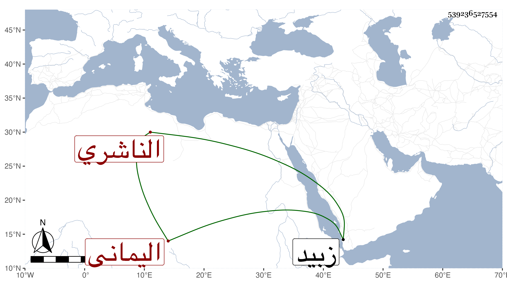

0902Sakhawi.DawLamic.ITO20230111-ara1.EIS1600.539236527554
Biography ID: 539236527554
55
الطيب بن محمد بن عبد الله بن عمر بن أبي بكر بن عمر بن عبد الرحمن ابن عبد الله أبي القسم الناشري اليماني الماضي . ولد في ربيع الآخر سنة ثمان وستين وسبعمائة وأخذ عن أبيه في الفقه والتفسير وغيرهما وعن الشهاب أحمد ابن أبي بكر الناشري ، وحج غير مرة وزار ولقي البرهان بن فرحون والزين المراغي فسمع منهما وأجازه جماعة ولما حج والده في سنة تسع وثمانمائة استخلفه على قضاء الكدرا فصمم على عدم القبول فتلطف به أخوه عبد الله حتى قبل فكان يقال ان بدايته كنهاية أبيه ، وقد أخذ عنه جماعة من أولاده وأقربائه ، وقدم زبيد في رمضان سنة تسع وعشرين فقرأ عليه قريبه العفيف عثمان مؤلف الناشريين وهو المترجم له . مات في جمادى الثانية سنة أربع وأربعين في قرية المراوعة ودفن عن الشيخ علي بن عمر الأهدل .
